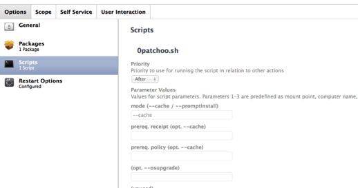
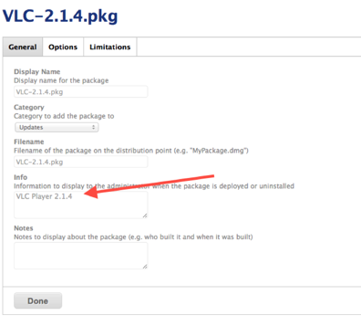
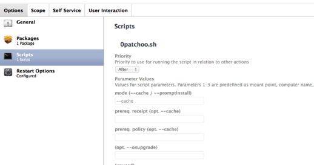
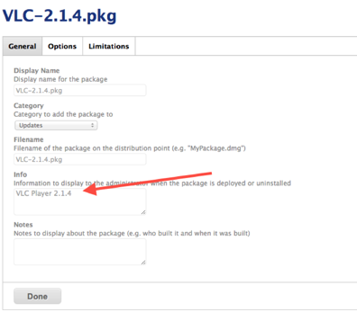

apple
Mavericks & Yosemite Yup!
17/06/14 16:05
I love cocoaDialog, but it seems that Mavericks and Yosemite don't as much. It was always going to be a risk, relying on software that's been stagnating for 2 years without an update... if I had the smarts I'd pick it up, but I don't.
Until someone can take cocoaDialog and update it for Mavericks new security features... (as stated by Greg Neagle - apps need to do very specific things to be allowed to play outside of a logged in user session in 10.9+) ... I've shoehorned a workaround, which whilst not terribly elegant, it does the job.
Patchoo 0.9931 - https://github.com/patchoo/patchoo
It performs a fauxLogout by quitting all apps (this will break [x] Reopen on Login), then uses the ARD framework's LockScreen to prevent user interaction. It also tweaks cocoaDialog LSUIEelement and LSUIPresentation mode for the install run. This hides the Dock and Menu bar. Taddaa!
A kludgey pretty awful, but functional way to lock down whilst we perform software installations.
Grab the latest code and let me know how you go!
Comments
Patchoo v0.99
29/05/14 14:35
It's here and features some great enhancements.
Make sure if you were using 0.98 read the docs! The parameter order and --cache mode has changed!
Now it's as simple as uploading your package, adding a nice name in the info field, create your smart group, create your policy to cache the pkg, then just add

Patchoo figures out what's been added to the JAMF/Waiting Room and pulls the pkg metadata direct from the JSS api!
Cool!
Now imagine if some robots could make your packages for you, then import them into the JSS and create your smart group for you.
What a world we live in!
- changed name of PreUpdate to patchooStart
- new super progress bar for jamf installs!
- new --cache mode minimises admin workload, no more passing metadata direct to the script!
- changes to parameters and order on patchoo.sh.
- some updated docs and screengrabs. Included the Self Service policies…
- packaged triggers as promised.
Make sure if you were using 0.98 read the docs! The parameter order and --cache mode has changed!
Now it's as simple as uploading your package, adding a nice name in the info field, create your smart group, create your policy to cache the pkg, then just add
patchoo.sh --cache to run AFTER.
Patchoo figures out what's been added to the JAMF/Waiting Room and pulls the pkg metadata direct from the JSS api!
Cool!
Now imagine if some robots could make your packages for you, then import them into the JSS and create your smart group for you.
What a world we live in!
junki is now Patchoo!
19/05/14 10:54
The feedback on junki has been awesome. I am pretty amazed at how many people have checked it out and the kind words I've received!
However, junki was always a working title. It seems it's caused a bit of confusion and I really don't want to step on the toes of the Greg and the munki guys as I have the utmost respect for them.
So after a sleep deprived weekend of madness with the kids, a new name came to me in a vision...
...a weird 60s space vision...
think Mars Attacks and kitsch sci-fi ray guns as you pronounce junki's new name...
After a mad search and replace, a repo rename ... welcome Patchoo to it's new home: http://patchoo.github.io/patchoo/
Excuse old references to junki in screenshots, but please do flag any you see. The discussion on JAMFnation is probably the best place to go to post issues, or git on Github and submit requests.
However, junki was always a working title. It seems it's caused a bit of confusion and I really don't want to step on the toes of the Greg and the munki guys as I have the utmost respect for them.
So after a sleep deprived weekend of madness with the kids, a new name came to me in a vision...
...a weird 60s space vision...
think Mars Attacks and kitsch sci-fi ray guns as you pronounce junki's new name...
Patchoo!
After a mad search and replace, a repo rename ... welcome Patchoo to it's new home: http://patchoo.github.io/patchoo/
Excuse old references to junki in screenshots, but please do flag any you see. The discussion on JAMFnation is probably the best place to go to post issues, or git on Github and submit requests.
Hello junki
16/05/14 09:48
I am officially releasing junki into the world! (It's about time!)
Mac patching on Casper, DONE RIGHT! There are million and one ways to deploy software and patches via Casper, but I think I've built a pretty great workflow and user experience.
In between countless tonnes of desktop support, broken meeting rooms and sleepless nights with my latest family addition, I have finally got the documentation (mostly) finished, and the code to a place where it's almost readable and (mostly) works.
Head on over to it's new home on GitHub - http://munkiforjamf.github.io/junki/
Watch the video, and then read (and help improve) the documentation and code! Submit some requests and I will figure out how to drive GitHub.
Again, if you like it I encourage you to say thanks with a LinkedIn reach out, endorse me, or write a nice recommendation. If you are ever in sunny Queensland Australia, you can always buy me a beer too.
Enjoy junki responsibly.